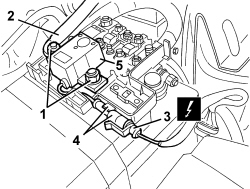

5530B72 RELAY FOR BATTERY DISCONNECTION SYSTEM - R.R.
- Path
- Procedures > 55 ELECTRICAL EQUIPMENT > 5530 CURRENT GENERATION > 5530B BATTERY AND LEADS > 5530B72 RELAY FOR BATTERY DISCONNECTION SYSTEM - R.R.
- Kind
- repair procedure (removal / refitting; the operation number is the code)
- Applies to
- all engines; all production periods
- Interactive page
- https://sloeber94.github.io/elrnDB-aBrrSpdr/en/#/946002379
Applies to: all engines; all production periods
 Removing
Removing
 Refitting
Refitting- Open the bonnet.
1. Release the retainers (1a) and remove the cover (1b) for the supply box.

Applies to: all engines; all production periods
1. Undo the nuts.
2. Move the electrical connection for the starter motor.
3. Disconnect the electrical connection.
Description | Component |
|---|---|
MAXI FUSE BOX ON BATTERY |
4. Release the connection from the retainers.
5. Remove the relay.

Applies to: all engines; all production periods
Refitting
Removing- Check that the relay is not damaged.
- Position the relay.
- Connect the connection to the retainers.
- Connect the electrical connection.
- Position the electrical connection for the starter motor.
- Tighten the nuts.
- Place the supply box cover in position and attach the retainers.
- Close the bonnet.